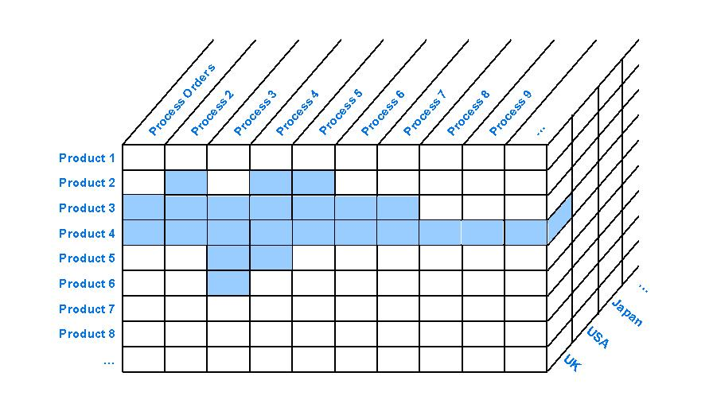
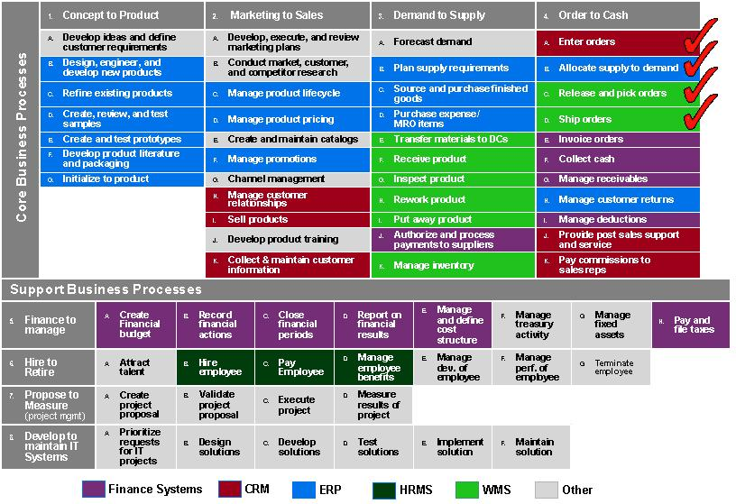
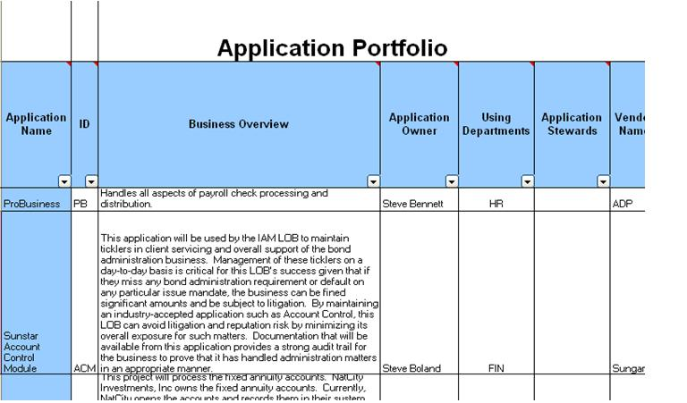
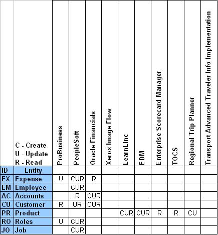

OUM |
Technique Overview |
||
Method Navigation |
Current Page Navigation |
||
|
|
||||||||
The purpose of this technique is to facilitate business scope definition. When making strategic decisions, the business scope definition assists in minimizing any confusion on what parts and aspects of the organization are included and influence the strategic decision making process.
The business scope should be presented in a simple and easily understood manner. If it is ill-defined, it becomes a source of conflict, which in turn spreads to disagreements between stakeholders.
Depending on scope and size of the engagement, the organizations maturity and senior management commitment the scope may encompass a single project all the way up to cover a whole enterprise. The business scope definition task is aimed at documenting one or all of the agreed processes, functions, systems, and business entities that form the basis of the scope definition.
Business Scope – The Business Scope describes the areas that are within the scope of the engagement at hand. This may be documented through different means, but may include a list of agreed upon
or any combination of the above.
No. |
Step | Component | Component Description |
|---|---|---|---|
1 |
Determine Scope Definition. | ||
2 |
Determine areas to be included in scope. |
This technique can be used to assist in defining project scope for Enterprise Architecture. The concept of defining a scope is used in a number of existing enterprise architecture frameworks. A good illustrative example of highlighting the functional and physical boundaries can be found in the Purdue Enterprise Reference Architecture (PERA) seen below:

Very quickly the products, business processes and locations that are part of the scope can be identified by the areas filled in blue. This domain may then be defined to be the scope of the effort.
The scope of the effort varies. Scope may be as small as a single project or as large as a project to cover a whole enterprise, so therefore one definition may not be sufficient to completely define the scope. You need to select the most appropriate definition(s), depending on the size of the effort. This can be achieved in a variety of ways using various types of models such as business function charts, application portfolio list, data by application matrix, etc.
Identifying business functions can be done using many different forms, from a simple list of business functions to something more informative such as a business function chart. The example below shows a Business Function Chart with a set of business functions selected as part of the scope. More information on how to define such a Business Function Chart can be found in the Functional or Process Modeling technique.
Identifying business processes can be done using many different forms, from a simple list of business processes to something more informative such as a business process application portfolio matrix. The example below shows a Business Process Application Landscape with a set of business processes selected as part of the scope.

Identifying projects and/or applications can be done using many different forms, from a simple list of applications to something more informative such as an Organization Unit Application Portfolio matrix as shown in the example below.

Identifying the business entities can be done using many different forms from a simple list of entities to something more informative such as a Data by Application matrix as shown in the example below:

There are no templates available to assist with this technique.
This technique is recommended for use in the following OUM tasks:
| Task | Usage |
|---|---|
| Review this technique as input into this task for a SOA Modeling Planning engagement. | |
| Review this technique as input into this task for a SOA Modeling Planning engagement. | |
| Use this technique to assist in scope definition. |
Use the following criteria to check the quality of this technique:

Copyright © 2006, 2016, Oracle and/or its affiliates. All rights reserved.